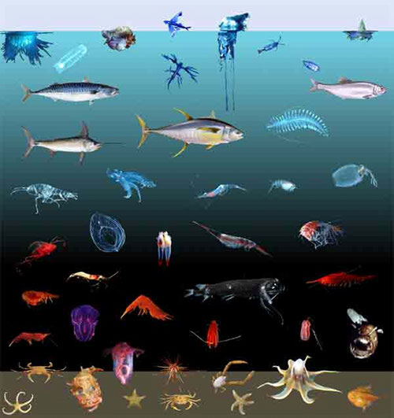

Why 30 days?
This challenge is the follow-up to a "Draw a bird for 30 days" challenge held last summer. That challenge was by a watercolor class instructor, Eileen McBride, who would draw different birds everyday with her sister during the COVID lockdown to stay connected.
Further exploration led to finding the artist Neiko Ng who did a similar bird-a-day personal challenge with the motto, “A bird a day keeps depression away” and the content creator Struthless who says drawing an ibis everyday changed his life.